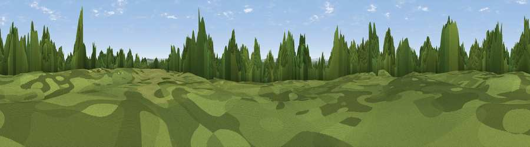

Wytham Hill
#25227 in England · top 49% of its area beats it · near SwinfordWhere it is
The exact computed spot (SP 45893 08255). Click the marker for map links.
The view, rendered

A 360° render of this exact spot computed from the terrain model, tree cover and land cover — summer colours, afternoon light, calibrated against photographs of famous viewpoints. Real trees, hedges and buildings will differ in detail.
The panorama
Grey silhouette: terrain skyline in each direction (720 bearings, Earth curvature and refraction included). Dashed green: skyline with trees (+15 m) and buildings (+8 m) as obstacles. Blue strip: how far the ground is visible on each bearing.
Where the view opens
Wedge length = distance to the farthest visible ground on that bearing (vegetation-aware). Rings at 10, 25 and 50 km.
What fills the view
32% woodland · 29% grassland · 29% cropland · 6% built-up · 4% water
Angular shares of the visible panorama (visual magnitude), not map area. Landscape diversity 0.60 (0–1 Shannon).
Key numbers
More beautiful places nearby
The staircase of upgrades: each row has a higher view potential than everything closer. Driving times are estimates from straight-line distance, calibrated against real road routing — check an actual route before setting out.
| Place | Direction | Drive | Score |
|---|---|---|---|
| Viewpoint near Farmoor | SSE · 1 km | ~3 min | 55.3 |
| Viewpoint near Swinford | WSW · 1 km | ~3 min | 64.5 |
| Round Hill | SE · 19 km | ~32 min | 70.1 |
| Viewpoint near Woolstone | SW · 27 km | ~43 min | 70.9 |
| Viewpoint near Woolstone | SW · 27 km | ~43 min | 76.7 |
| Broadway Hill | NW · 44 km | ~64 min | 77.7 |
| Viewpoint near Cleeve Hill | WNW · 50 km | ~72 min | 79.6 |
| Cleeve Hill | WNW · 51 km | ~72 min | 79.8 |
51.77110, -1.33630 · source: osm peak · position refined by local search. Computed location — check access rights before visiting.